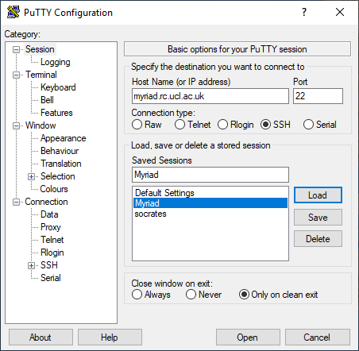

How do I?
I have an account, now:
How do I log in?
Logging in is most straightforward if you are inside the UCL firewall. If you are logging in from home or other external networks then you first have to get on to the UCL network.
Linux / Unix / macOS
Use the terminal and type the below command to secure shell (ssh) into the machine you wish to access. Replace <username> with your username, and <node> with the name of the machine you want to log in to, eg. angus, zed, butch.
ssh <username>@<node>.theory.phys.ucl.ac.uk
Windows
On Windows you need something that will give you a suitable terminal and ssh - usually PuTTY, or
on Windows 10 you can use OpenSSH from a command prompt and type the same ssh command as the
Linux instructions.
Using PuTTY
PuTTY is a common SSH client on Windows and is available on Desktop@UCL. You can find it under:
Start > P > PuTTY 0.83 (64-bit) > PuTTY 0.83 or type "putty" in the toolbar's search box.
You will need to create an entry for the host you are connecting to with the settings below. If you want to save your settings, give them an easily-identifiable name in the "Saved Sessions" box and press "Save". Then you can select it and "Load" next time you use PuTTY.

You will then be asked to enter your username and password. Only enter your username, not @<node>.theory.phys.ucl.ac.uk. The password field will remain entirely blank when you type in to it - it does not show placeholders to indicate you have typed something.
The first time you log in to a new server, you'll get a popup telling you that the server's host key is not cached in the registry - this is normal and is because you have never connected to this server before. If you want to, you can check the host fingerprint against our current key fingerprints.
Logging in from outside the UCL firewall
You will need to either use the UCL Virtual Private Network or ssh in to UCL's Gateway system ssh0.theory.phys.ucl.ac.uk first. From there you can then ssh in to our systems.
ssh <username>@ssh0.theory.phys.ucl.ac.uk
ssh <username>@<node>.theory.phys.ucl.ac.uk
Advanced: If you find you need to go via the Gateway often, you can set up this jump automatically, see Single-step logins using tunnelling
Login problems
If you experience difficulties with your login, please make sure that you are typing your UCL user ID and your password correctly. If you have recently updated your password, it takes some hours to propagate to all UCL systems.
If you still cannot get access but can access other UCL services like the SSH Gateway, please contact us on rc-support@ucl.ac.uk. Your account may have expired, or you may have gone over quota.
If you cannot access anything, please see UCL MyAccount - you may need to request a password reset from the Service Desk.
If you get a host key error message, you will need to delete old host keys - continue reading!
Remote host identification has changed
When you log in via SSH, it keeps a record of the host key for the server you logged in to in
your .ssh/known_hosts file in your home directory, on the machine you are logging in from.
This helps make sure you are connecting directly to the server you think you are, but can cause
warnings to show up if the host key on that machine has genuinely changed (usually because of an
update or reinstall).
Check the host key warning against our current key fingerprints:
The error message looks like this if you are using OpenSSH in a terminal:
@@@@@@@@@@@@@@@@@@@@@@@@@@@@@@@@@@@@@@@@@@@@@@@@@@@@@@@@@@@
@ WARNING: REMOTE HOST IDENTIFICATION HAS CHANGED! @
@@@@@@@@@@@@@@@@@@@@@@@@@@@@@@@@@@@@@@@@@@@@@@@@@@@@@@@@@@@
IT IS POSSIBLE THAT SOMEONE IS DOING SOMETHING NASTY!
Someone could be eavesdropping on you right now (man-in-the-middle attack)!
It is also possible that a host key has just been changed.
The fingerprint for the ECDSA key sent by the remote host is
SHA256:7FTryal3mIhWr9CqM3EPPeXsfezNk8Mm8HPCCAGXiIA.
Please contact your system administrator.
Add correct host key in /Users/uccaxxx/.ssh/known_hosts to get rid of this message.
Offending ECDSA key in /Users/uccaxxx/.ssh/known_hosts:11
ECDSA host key for angus.theory.phys.ucl.ac.uk has changed and you have requested strict checking.
Host key verification failed.
Killed by signal 1.
known_hosts file.
Sometimes it will give you a direct command you can run to remove that specific key:
ssh-keygen -R angus.theory.phys.ucl.ac.uk
If you are logging in via the Gateway, you will need to remove the old key there too. On the Gateway,
nano and vim are available text editors. If you are not already familiar
with vim, use nano - it has the command shortcuts shown at the bottom, where ^O means
press Ctrl and then the letter o.
# to open the file for editing in nano
nano ~/.ssh/known_hosts
The authenticity of host 'angus.theory.phys.ucl.ac.uk can't be established.
ECDSA key fingerprint is SHA256:7FTryal3mIhWr9CqM3EPPeXsfezNk8Mm8HPCCAGXiIA.
Are you sure you want to continue connecting (yes/no)?
yes will allow you to continue logging in.
PuTTY will display a warning and you can choose to continue or not.
WinSCP will say Server's host key does not match the one that WinSCP has in cache.
and you will have the option to update the key.
MacOS connection failures
If you are on macOS and getting many ssh connection failures and broken pipe messages when trying to log in, try adding an ssh timeout to your ssh command:
ssh -o ConnectTimeout=10 <your_UCL_user_id>@angus.theory.phys.ucl.ac.uk
How do I log out?
You can log out of the systems by typing exit and pressing enter.
(logout or pressing Ctrl+D also work)
How do I transfer data onto the system?
icon: material/ghost You can transfer data to and from our systems using any program capable of using the Secure Copy (SCP) protocol. This uses the same SSH system as you use to log in to a command line session, but then transfers data over it. This means that if you can use SSH to connect to a system, you can usually use SCP to transfer files to it.
Copying files using Linux or macOS
You can use the command-line utilities scp, sftp or rsync to copy your data about. You can also use a graphical client (Transmit, CyberDuck, FileZilla).
Scp
This will copy a data file from somewhere on your local machine to a specified location on the remote machine (Butch etc).
scp <local_data_file> <username>@<remote_hostname>:<remote_path>
# Example: copy myfile from your local current directory into Scratch on Butch
scp myfile <username>>@angus.theory.phys.ucl.ac.uk:/scratch/<username>
This will do the reverse, copying from the remote machine to your local machine. (This is still run from your local machine).
scp <username>@<remote_hostname>:<remote_path><remote_data_file> <local_path>
# Example: copy myfile from any node into the Backups directory in your local current directory
scp ccxxxxx@ssh0.theory.phys.ucl.ac.uk:/scratch/<username>/myfile Backups/
Sftp
You can use sftp to log in to the remote machine, navigate through directories and use put and get to copy files from and to your local machine. lcd and lls are local equivalents of cd and ls so you can navigate through your local directories as you go.
sftp <username>@<remote_hostname>
cd <remote_path>
get <remote_file>
lcd <local_path>
put <local_file>
# Example: download a copy of file1 into your local current directory,
# change local directory and upload a copy of file2
sftp ccxxxxx@ssh0.theory.phys.ucl.ac.uk
cd Scratch/files
get file1
lcd ../files_to_upload
put file2
Rsync
rsync is used to remotely synchronise directories, so can be used to only copy files which have changed. Have a look at man rsync as there are many options.
Copying files using Windows and WinSCP
WinSCP is a graphical client that you can use for scp or sftp.
- The login/create new session screen will open if this is the first time you are using WinSCP.
- You can choose SFTP or SCP as the file protocol. If you have an unstable connection with one, you may wish to try the other. SCP is probably generally better.
- Fill in the hostname of the machine you wish to connect to, your username and password.
- Click Save and give your settings a useful name.
- You'll then be shown your list of Stored sessions, which will have the one you just created.
- Select the session and click Login.
MobaXterm
If using MobaXterm, you may need to set a password for the left side file manager panel separately as well as for the main panel, to allow you to drag and drop files and have them transferred to the cluster.
Transferring files from outside the UCL firewall
As when logging in, when you are outside the UCL firewall you will need a method to connect inside it before you copy files.
You can use the UCL Virtual Private Network and scp direct to our systems or you can do some form of SSH tunnelling.
Single-step logins using tunnelling
Linux / Unix / macOS
On the command line
# Log in to Angus, jumping via the Gateway (replace ccxxxxx with your own username)
ssh -o ProxyJump=<username>@angus.theory.phys.ucl.ac.uk ccxxxxx@ssh0.theory.phys.ucl.ac.uk
# Copy 'my_file' from the machine you are logged in to into your Scratch on Grace
# Replace ccxxxxx with your own username.
scp -o ProxyJump=<username>@angus.theory.phys.ucl.ac.uk my_file <username>@ssh0.theory.phys.ucl.ac.uk:/scratch/<username>
This tunnels through the Gateway in order to get you to your destination - you'll be asked for your password twice, once for each machine. You can use this to log in or to copy files.
You may also need to do this if you are trying to reach one cluster from another and there is a firewall in the way.
Using a config file
You can create a config file which does this without you needing to type it every time.
Inside your ~/.ssh directory on your local machine, add the below to your config file (or create a file called config if you don't already have one).
Generally, it should be of this form where <name> can be anything you want to call this entry.
Host <name>
User <username>
HostName <remote_hostname>
proxyCommand ssh -W <remote_hostname>:22 <username>@ssh0.theory.phys.ucl.ac.uk
Here are some examples - you can have as many of these as you need in your config file.
Host angus
User ccxxxxx
HostName angus.theory.phys.ucl.ac.uk
proxyCommand ssh -W angus.theory.phys.ucl.ac.uk:22 <username>@ssh0.theory.phys.ucl.ac.uk
Host zed
User ccxxxxx
HostName zed.theory.phys.ucl.ac.uk
proxyCommand ssh -W zed.theory.phys.ucl.ac.uk:22 <username>@ssh0.theory.phys.ucl.ac.uk
Host butch
User ccxxxxx
HostName butch.theory.phys.ucl.ac.uk
proxyCommand ssh -W butch.theory.phys.ucl.ac.uk:22 <username>@ssh0.theory.phys.ucl.ac.uk
You can now just type ssh ssh0 or scp file1 ssh0:~ and you will go through the Gateway. You'll be asked for login details twice since you're logging in to two machines, a Gateway server and your endpoint.
Windows - WinSCP
WinSCP can also set up SSH tunnels.
- Create a new session as before, and tick the Advanced options box in the bottom left corner.
- Select Connection > Tunnel from the left pane.
- Tick the Connect through SSH tunnel box and enter the hostname of the gateway you are tunnelling through, for example ssh0.theory.phys.ucl.ac.uk
- Fill in your username and password for that host. (Central UCL ones for the Gateway).
- Select Session from the left pane and fill in the hostname you want to end up on after the tunnel.
- Fill in your username and password for that host and set the file protocol to SCP.
- Save your settings with a useful name.
Creating a tunnel that other applications can use
Some applications do not read your SSH config file and also cannot set up tunnels themselves, but can use one that you have created separately. FileZilla in particular is something you may want to do this with to transfer your files directly to the clusters from outside UCL using a graphical client.
SSH tunnel creation using a terminal
You can do this in Linux, macOS and the Windows Command Prompt on Windows 10 and later.
Set up a tunnel between a port on your local computer (this is using 3333 as it is unlikely to be in use, but you can pick different ones) to Myriad's port 22 (which is the standard port for ssh), going via a UCL gateway.
# replace ccxxxxx with your Cluster username
ssh -L 3333:angus.theory.phys.ucl.ac.uk:22 <username>@ssh0.theory.phys.ucl.ac.uk
You may also want to use the -N option to tell it not to execute any remote commands and
-f to put this command into the background if you want to continue to type other commands
into the same terminal.
The tunnel now exists, and localhost:3333 on your computer connects to Myriad.
You can do this with ports other than 22 if you are not wanting to ssh in but to instead connect
with a local browser to something running on Angus. Here the port remains as 3333,
something could be launched on that port on Angus and your browser could be pointed at
localhost:3333 to connect to it.
# replace ccxxxxx with your UCL username
ssh -L 3333:angus.theory.phys.ucl.ac.uk:3333 <username>@ssh0.theory.phys.ucl.ac.uk
Do not leave things like this running for long periods on the login nodes.
SSH tunnel creation using PuTTY
On Windows you can also set up a tunnel using PuTTY.
Connect to your tunnel with an application (like FileZilla)
You can then tell your application to connect to localhost:3333 instead of Angus. If it has
separate boxes for hostname and port, put localhost as the hostname and 3333 as the port.
Managing your quota
After using lquota to see your total usage, you may wish to find what is using all your space.
du is a command that gives you information about your disk usage. Useful options are:
du -ch <dir>
du -h --max-depth=1
The first will give you a summary of the sizes of directory tree and subtrees inside the directory you specify, using human-readable sizes with a total at the bottom. The second will show you the totals for all top-level directories relative to where you are, plus the grand total. These can help you track down the locations of large amounts of data if you need to reduce your disk usage.
How do I connect out to an FTP server?
You cannot connect in to Angus using FTP (we only allow SFTP access) but you can connect out to FTP servers run by other people.
Load the GNU inetutils module which provides ftp, telnet and tftp clients.
module load inetutils/1.9.4
# connect to your desired server
ftp servername.ac.uk
You can then use put and get commands to put data on the remote FTP server or download it
from there to Angus.
How do I run a graphical program?
To run a graphical program on the cluster and be able to view the user interface on your own local computer, you will need to have an X-Windows Server installed on your local computer and use X-forwarding.
X-forwarding on Linux
Desktop Linux operating systems already have X-Windows installed, so you just need to ssh in with the correct flags.
You need to make sure you use either the -X or -Y (look at man ssh for details) flags on all ssh commands you run to establish a connection to the cluster.
For example, connecting from outside of UCL:
ssh -X <username>@ssh0.theory.phys.ucl.ac.uk
ssh -X <username>@angus.theory.phys.ucl.ac.uk
A video walkthrough of running remote applications using X11, X-forwarding on compute nodes.
X-forwarding on macOS
You will need to install XQuartz to provide an X-Window System for macOS. (Previously known as X11.app).
You can then follow the Linux instructions using Terminal.app.
X-forwarding on Windows
You will need:
- An SSH client; e.g., PuTTY
- An X server program; e.g., Exceed, Xming
Exceed is available on Desktop@UCL machines and downloadable from the UCL software database. Xming is open source (and mentioned here without testing).
Exceed on Desktop@UCL
- Load Exceed. You can find it under Start > All Programs > Applications O-P > Open Text Exceed 14 > Exceed
- Open PuTTY (Applications O-P > PuTTY)
- In PuTTY, set up the connection with the host machine as usual:
- Host name:
angus.theory.phys.ucl.ac.uk(for example) - Port:
22 - Connection type:
SSH
- Host name:
- Then, from the Category menu, select Connection > SSH > X11 for 'Options controlling SSH X11 forwarding'.
- Make sure the box marked 'Enable X11 forwarding' is checked.
- Return to the session menu and save these settings with a new identifiable name for reuse in future.
- Click 'Open' and login to the host as usual
- To test that X-forwarding is working, try running
neditwhich is a text editor in our default modules.
If nedit works, you have successfully enabled X-forwarding for graphical applications.
Installing Xming
Xming is a popular open source X server for Windows. These are instructions for using it alongside PuTTY. Other SSH clients and X servers are available. We cannot verify how well it may be working.
- Install both PuTTY and Xming if you have not done so already. During Xming installation, choose not to install an SSH client.
- Open Xming - the Xming icon should appear on the task bar.
- Open PuTTY
- Set up PuTTY as shown in the Exceed section.